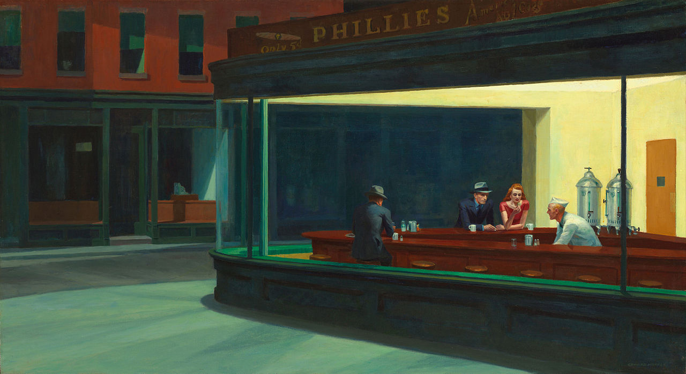

Noir
By Edward Hopper - http://www.artic.edu/aic/collections/artwork/111628, Public Domain, https://commons.wikimedia.org/w/index.php?curid=25899486
As with many things in our culture, modern Noir was built on the Film Noir of the past, which itself was influenced by German Expressionism, French poetic realism, Italian neorealism, American hardboiled fiction, and Art Deco among others. The gritty, morally grey dramas of Film Noir heavily contrasted the white washed depictions of police work that was mostly shown before, which may have been one of the reasons for its long lasting resonance with audiences A closely tied element of Noir is the melancholic, dark sounding Noir Jazz.
Not all Film Noir were based on police work, though many of its best entries are of such; D.O.A. (1949), The Asphalt Jungle (1950), The Maltese Falcon (1941), Casablanca (1942) among too many others to list are some of the most well known films of the era. The term Noir of course French for black or dark, referencing not the black and white film (as it was the standard at the time of its first use and for many years after), but instead the dark nature of such films in its genre.

While Classic Noir is usually dated from the early 1940s to the late 1950s, rather than dying as a genre it evolved into Neo Noir, which also branched Neon Noir. Neo Noir refers to most crime dramas from after the period of Classic Noir, keeping the same twisted morals and dark themes, whereas Neon Noir, named as such for the neon lights common in the cities of the 80s, was more modern, reflecting the new views of crime fighting in the wake of the War on Drugs, providing a critique on global capitalism and consumerism as well as the military-industrial complex of the United States. A few examples of Neo Noir films are the works of Quentin Tarantino, particularly Reservoir Dogs (1992) and Pulp Fiction (1994) Neon Noir films are Taxi Driver (1976), and Blade Runner (1982).

Modern Noir can’t be as easily defined as like with many other cultural icons with the advent of the internet it focuses on nostalgic aestheticism, and can be presented through images, video, and different types of music. Many noir images are of 1940s and 50s iconography photographed in black and white, though much has modern elements, taking in the current world. Some images heavily stylise, leaving in a single colour or use sepia instead of black and white. People gather to share pieces of media, found or created that they feel is through various film forums, the dedicated Noir Subreddit, or other social media. Modern Noir has expanded beyond the film industry, with many video games taking the twisted dark genre and either paying homage to either the classics, such as Rockstar Games’ L.A. Noir (2011), also from Rockstar is the Neo Noir Max Payne (2001) and every game in its series, or Mehsoft’s The Mercury Man (2018), which overlaps with Cyberpunk due to its heavy sci-fi theme.

Like many others, Noir started as a film style and evolved and grew with the times, continuing now in the popular world as an interactive fusion of present and past, combining new and old media, creating a powerful media for creation.